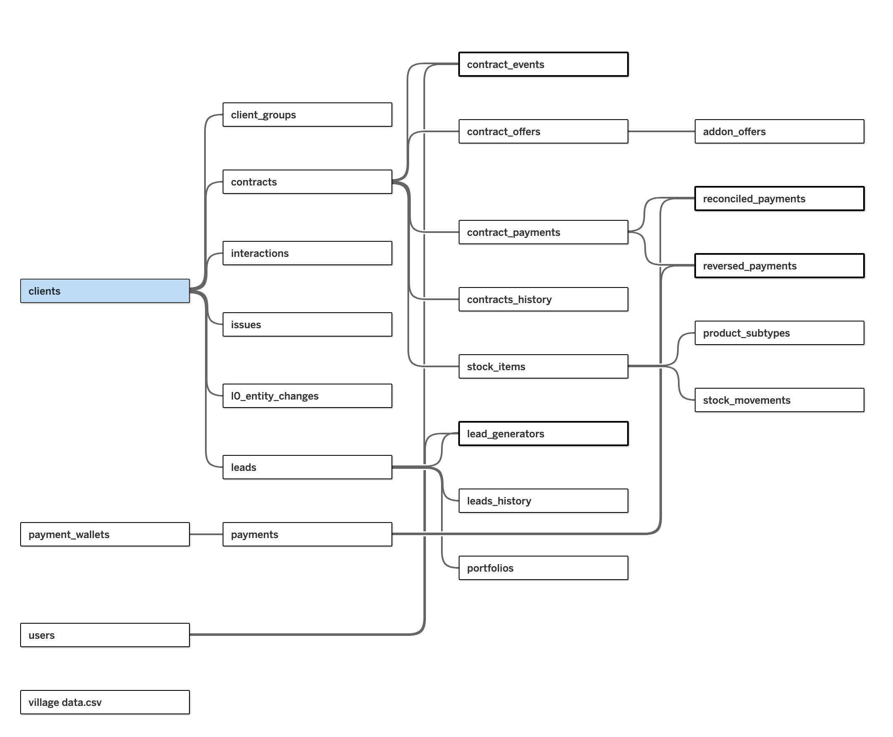

The question the client wanted answered was simple: which of our field agents are actually
performing? The obstacle was not analytical. It was that the payments table's
user_id column was empty for every single row — so there was no way to
connect a payment to the agent who had brought that customer in. The database also arrived with
no data dictionary and no ER diagram.
Reconstructing that link was the project. I wrote profiling scripts to generate the missing data
dictionary table by table, then inferred the foreign keys programmatically — scanning for
*_id columns shared between tables and treating an overlap of five or more values as
a candidate relationship, then rendering the result as an ER graph with networkx. Agent names were
spelled inconsistently across tables, so I normalised them with NFKD to strip accents and built a
canonical name map on top. In Tableau I duplicated the users and
lead_generators tables to complete a join path that the schema could not otherwise
express. Every relationship I inferred, I checked against row counts and sampled records before
building on it.

payments → leads → lead_generators: rebuilding it is what made agent-level analysis possible at all.Payment success rate by field agent
Two things I chose not to do are the parts I'd defend hardest. There were only about fifteen agents and seven with meaningful transaction volume, so after trying exploratory clustering I dropped it — the sample could not support a model, and a descriptive KPI framework with explicit business rules was the honest answer. And the language field, which mattered because the client serves Wayuunaiki-speaking communities, was populated for 3 of 932 customers. Rather than analyse it anyway, we wrote "start collecting village-level language data" into the recommendations.
I owned the water-clarity workstream on a four-person blue-economy research team. The source was a public Copernicus Marine satellite archive — most days cloud-obscured or off-target. The pipeline I built in xarray extracted three coastal sites from every usable day, producing the analytical dataset behind the team's dashboard, delivered through BigQuery.
Mean particulate backscatter (turbidity proxy), 1997–2025
Students kept asking the same prerequisite questions because the answers were scattered across checklists, flow charts and spreadsheet footnotes. We built a retrieval-augmented advising bot over those documents. I owned the product design, the chat front end, and the answer policy; my teammates built the retrieval pipeline.
SQL · PostgreSQL · Python (pandas, scikit-learn, XGBoost, LightGBM) · Tableau · Excel
R · BigQuery · Looker Studio · Google Earth Engine · Git